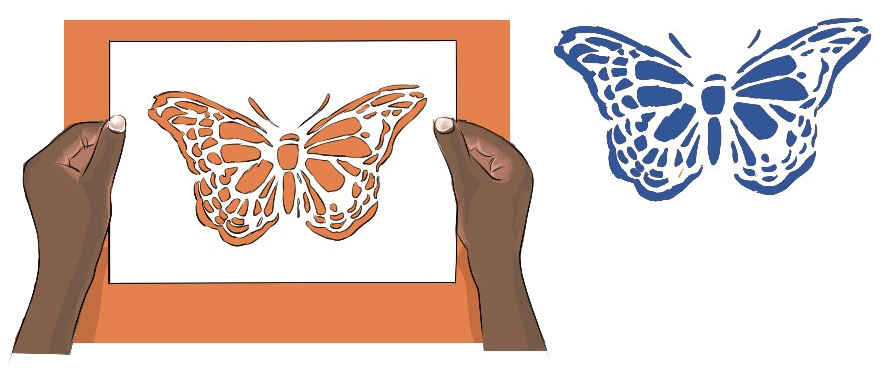
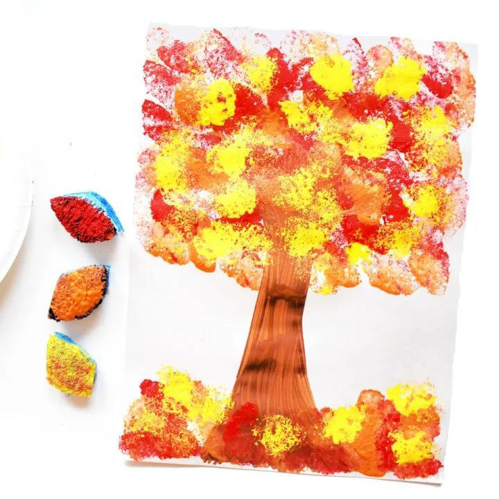

Stencil decorative painting technique
This is done by using a stencil. A stencil can be a thin sheet of hard paper or plastic with a design to be printed. These can be used to produce the cut design on the surface. The process is done by applying paint on the stencil, by using spray paint or opaque with a sponge or brush. Then, the pigment penetrates through the stencil holes to allow decoration/design appearance on the surface. Figure 3.15 shows an example of a stencil decorative painting.

Sponge decorative painting technique
In this technique, a painting decoration is made by using a sponge. The sponge is used to pick colours to apply decorations. Sponging is done as a freestyle in such a way that an artist can apply whatever design he or she wishes to make. The technique is done by dabbing a sponge to create various simple shapes. Figure 3.16 shows a simple decorative painting by sponging technique.
